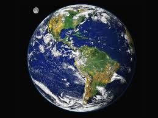

Gezegenleri Tanıyalım
Merkür
 Uydusu olmayan iki gezegenden biridir. Güneşe 58 Milyon km uzaklık ile en yakın gezegendir ve sekiz gezegen içerisinde kütlesi itibariyle sekizinci sıradadır. Yarıçapı 2439 km’dir. Çekim gücü dünyanın çekim gücünün 1/3′ü kadardır. Dünyada 50 kg ağırlığındaki bir cisim burada 17 kg civarındadır. Güneşe yakınlığı sebebiyle yüzey sıcaklığı 450 °C ‘nin üzerine çıkabilirken gece güneş ışınlarını almayan diğer tarafı ise -172 °C ‘ye kadar düşebilmektedir. Üzerine düşen ışınların ancak onda birini yansıta bilmektedir. Merkür, kendi ekseni etrafındaki dönüşünü 58 günde, güneş etrafındaki dönüşünü de 88 günde tamamlamaktadır. Yörünge üzerindeki dönüş hızı yaklaşık olarak 35 km/s’dir. Yerçekim kuvvetinin az olması sonucu çok ince bir atmosfere sahip olan Merkür çok miktarda Helyum ve Hidrojen içerirken, yüzeyi de silikat tozları ile kaplıdır. Güneşe çok yakın bulunduğu için çıplak gözle görülmesi sadece gün doğumunda ve gün batımında mümkün olmaktadır.
Uydusu olmayan iki gezegenden biridir. Güneşe 58 Milyon km uzaklık ile en yakın gezegendir ve sekiz gezegen içerisinde kütlesi itibariyle sekizinci sıradadır. Yarıçapı 2439 km’dir. Çekim gücü dünyanın çekim gücünün 1/3′ü kadardır. Dünyada 50 kg ağırlığındaki bir cisim burada 17 kg civarındadır. Güneşe yakınlığı sebebiyle yüzey sıcaklığı 450 °C ‘nin üzerine çıkabilirken gece güneş ışınlarını almayan diğer tarafı ise -172 °C ‘ye kadar düşebilmektedir. Üzerine düşen ışınların ancak onda birini yansıta bilmektedir. Merkür, kendi ekseni etrafındaki dönüşünü 58 günde, güneş etrafındaki dönüşünü de 88 günde tamamlamaktadır. Yörünge üzerindeki dönüş hızı yaklaşık olarak 35 km/s’dir. Yerçekim kuvvetinin az olması sonucu çok ince bir atmosfere sahip olan Merkür çok miktarda Helyum ve Hidrojen içerirken, yüzeyi de silikat tozları ile kaplıdır. Güneşe çok yakın bulunduğu için çıplak gözle görülmesi sadece gün doğumunda ve gün batımında mümkün olmaktadır.
VENÜS
 Venüs diğer adıyla çoban yıldızı 108.4 milyon km ile güneşe en yakın ikinci gezegendir. Dünyaya en yakın olduğu mesafe 38 milyon km’dir. 6050 km’lik yarıçapı olan bu gezegen neredeyse dünya ile aynı boyutlardadır. Merkür gibi bu gezegenin de uydusu yoktur. Venüs, güneş çevresindeki dönüşünü 225 günde tamamlarken diğer gezegenlerin tersi yönünde dönmektedir. Diğer tüm gezegenler saat yönünün tersine dönerken Venüs saat yönünde döner. Haliyle güneş batıdan doğup doğudan batar. Güneş ışınlarının %80′ini yansıtabilen bu gezegen güneş ve aydan sonraki en parlak gezegendir. Atmosferi yoğun olduğu için dünyadan teleskopla veya başka bir cihazla görüntülenmesi mümkün olmamıştır. . Venüsün atmosfer basıncı dünyadaki atmosfer basıncının 90 katı kadardır ve sera etkisi sonucu bu gezegenin ekvatordaki sıcaklığı 500 °C ‘nin üzerine çıkabilmektedir. Güneş ışınlarının %2′si yüzeyine ulaşır ve atmosferdeki su buharı oranı dünyadakinin %1′i kadardır. 27 Mart 1972′de fırlatılan Venere-8 adlı uzay aracının göndermiş olduğu verilere göre venüs etrafındaki bulutlar 60 km’ye kadar çıkabilmekte ve hızlı bir şekilde hareket etmektedir. Venüs gezegeni bilim insanlarının merak konusu olmuştur bu nedenlede en çok uzay aracı gönderilen ve üzerinde en çok insan yapımı araç bulunan gezegendir.
Venüs diğer adıyla çoban yıldızı 108.4 milyon km ile güneşe en yakın ikinci gezegendir. Dünyaya en yakın olduğu mesafe 38 milyon km’dir. 6050 km’lik yarıçapı olan bu gezegen neredeyse dünya ile aynı boyutlardadır. Merkür gibi bu gezegenin de uydusu yoktur. Venüs, güneş çevresindeki dönüşünü 225 günde tamamlarken diğer gezegenlerin tersi yönünde dönmektedir. Diğer tüm gezegenler saat yönünün tersine dönerken Venüs saat yönünde döner. Haliyle güneş batıdan doğup doğudan batar. Güneş ışınlarının %80′ini yansıtabilen bu gezegen güneş ve aydan sonraki en parlak gezegendir. Atmosferi yoğun olduğu için dünyadan teleskopla veya başka bir cihazla görüntülenmesi mümkün olmamıştır. . Venüsün atmosfer basıncı dünyadaki atmosfer basıncının 90 katı kadardır ve sera etkisi sonucu bu gezegenin ekvatordaki sıcaklığı 500 °C ‘nin üzerine çıkabilmektedir. Güneş ışınlarının %2′si yüzeyine ulaşır ve atmosferdeki su buharı oranı dünyadakinin %1′i kadardır. 27 Mart 1972′de fırlatılan Venere-8 adlı uzay aracının göndermiş olduğu verilere göre venüs etrafındaki bulutlar 60 km’ye kadar çıkabilmekte ve hızlı bir şekilde hareket etmektedir. Venüs gezegeni bilim insanlarının merak konusu olmuştur bu nedenlede en çok uzay aracı gönderilen ve üzerinde en çok insan yapımı araç bulunan gezegendir.
DÜNYA
Dünya eski adıyla Arz, 149 milyon km ile güneşe en yakın üçüncü gezegendir. Tek doğal uydusu bulunan dünyanın, çapı 12.756 km’dir. Güneşin etrafındaki dönüşünü 365 gün 5 saat 48 dakika ve 46 saniyede tamamlarken kendi eksenindeki dönüşünü ise 23 saat 56 dakika 4 saniyede tamamlar. Güneş etrafında dönmesi sonucu mevsimler, kendi etrafında dönmesi sonucun da ise gece ve gündüz oluşur. Dünya kutuplardan basık ekvatordan şişkin bir yapıya sahiptir buna “geoid” denir. Geoid şeklinin oluşmasında merkezkaç kuvveti etkili olmuştur. Dünya, yörüngesi üzerinde hareket ederken güneş ile arasındaki mesafe artar ve azalır. Güneş ile en yakın olduğu noktaya geldiğinde ortalama hızı 960 km/sn artar. Biz dünyanın dönüşünü hissetmeyiz çünkü dünya ile birlikte atmosfer de dönmektedir. Ortalama yüzey sıcaklığı 15 °C ‘dir ve atmosferinde Azot ve Oksijen olmak üzere iki temel gaz bulunmaktadır. Dünyanın yoğunluğu 5.52 gr/cm3 ‘tür. Dünyayı diğer gezegenlerden ayıran en büyük özellik ise evrende canlı bulunan yegane gezegen olmasıdır. Ayrıca hiçbir gezegen dünya benzeri bir atmosfere sahip değildir. Dünyaya uzaydan bakıldığında mavi renkte göründüğü için “mavi gezegen” olarak da adlandırılır.
- Ay Uydusu: Güneş sistemindeki 3.476 km’lik çapı ile beşinci büyük doğal uydudur. Çapı dünyanın çapının %27′si kadardır. Yoğunluğu 3,31 gr/cm3 ‘tür. Ay’daki yer çekimini dünyadaki yerçekiminin 6′da 1′i kadardır. Bu nedenle dünya da 60 Kg ağırlığındaki bir madde Ay’da 10 Kg gelir. Ay’da atmosfer yoktur bu nedenle radyasyon gibi zararlı ışınlar ay yüzeyine direk temas edebildiği gibi göktaşları da herhangi bir engellemeye maruz kalmadan yüzeye ulaşabilir. Ay yüzeyinde sıcaklık 102 °C ‘ye çıkabildiği gibi gölgelerde -157 °C ‘ye kadar düşebilmektedir. Ay güneş ışınlarının sadece % 7′sini yansıtabilmektedir ancak dünyaya yakın olduğundan parlak görünür.
MARS
 diğer adıyla Merih gezegeni, güneşe 208 milyon km. ile dördüncü sıradaki gezegendir. 3377 km. yarıçapı bulunan bu gezegen, dünyanın çekim kuvvetinin %40′ı kadar bir çekim kuvvetine sahiptir. Yoğunluğu 3.95 gr/cm3 olan bu gezegen 24 sa 37 dakikada, güneş etrafındaki dönüşünü ise 687 günde tamamlamaktadır. İnce bir atmosferi bulunan bu gezegenin Dünya’daki gibi volkan, vadi, çöl ve kutup bölgelerini içeren yapısıyla dünya benzeri bir gezegendir. Phobos, Deimos adlı iki uydusu bulunan bu gezegende hayat olduğu konusundaki söylentiler bir zamanlar yoğunluk kazanmıştı. Hatta Marslılardan sinyal alındığı konusundaki söylentilerde azınmsanamayacak kadar fazlaydı. Ancak mars üzerinde yapılan araştırmalar yaşam olduğu konusundaki söylemleri biraz azaltmış olsada Mars’da çeşitli bitkilerin olabileceği iddiası kafaları kurcalamaya devam etmektedir. Mars’ın eksen eğikliği 24 derecedir, dünyanın ki ise 23,5 derecedir bu yönüylede dünya ile benzerleki gösterir. Mars’da da tıpkı dünya gibi yıl içinde güneşe yaklaşır ve uzaklaşır bu nedenle güney yarımkürede yaz mevsimi güneşe yakın olduğu dönemlerde yaşanır. Mars yüzeyi incelendiğinde eski dere yataklarına benzeyen bazı şekiller bulunmuştur ve kutuplarının su buzu ile kaplı olduğu saptanmıştır. Hatta sel baskınlarının izlerine bile rastlanmıştır bu durum Mars’da hayat var mıydı? sorusunu yeniden gündeme getirmiştir.
diğer adıyla Merih gezegeni, güneşe 208 milyon km. ile dördüncü sıradaki gezegendir. 3377 km. yarıçapı bulunan bu gezegen, dünyanın çekim kuvvetinin %40′ı kadar bir çekim kuvvetine sahiptir. Yoğunluğu 3.95 gr/cm3 olan bu gezegen 24 sa 37 dakikada, güneş etrafındaki dönüşünü ise 687 günde tamamlamaktadır. İnce bir atmosferi bulunan bu gezegenin Dünya’daki gibi volkan, vadi, çöl ve kutup bölgelerini içeren yapısıyla dünya benzeri bir gezegendir. Phobos, Deimos adlı iki uydusu bulunan bu gezegende hayat olduğu konusundaki söylentiler bir zamanlar yoğunluk kazanmıştı. Hatta Marslılardan sinyal alındığı konusundaki söylentilerde azınmsanamayacak kadar fazlaydı. Ancak mars üzerinde yapılan araştırmalar yaşam olduğu konusundaki söylemleri biraz azaltmış olsada Mars’da çeşitli bitkilerin olabileceği iddiası kafaları kurcalamaya devam etmektedir. Mars’ın eksen eğikliği 24 derecedir, dünyanın ki ise 23,5 derecedir bu yönüylede dünya ile benzerleki gösterir. Mars’da da tıpkı dünya gibi yıl içinde güneşe yaklaşır ve uzaklaşır bu nedenle güney yarımkürede yaz mevsimi güneşe yakın olduğu dönemlerde yaşanır. Mars yüzeyi incelendiğinde eski dere yataklarına benzeyen bazı şekiller bulunmuştur ve kutuplarının su buzu ile kaplı olduğu saptanmıştır. Hatta sel baskınlarının izlerine bile rastlanmıştır bu durum Mars’da hayat var mıydı? sorusunu yeniden gündeme getirmiştir.
2. Dış (Gaz Yapılı) Gezegenler :
Bu gezegenler; Jüpiter, Satürn, Uranüs, Neptün ve Pluton ‘dur.
JÜPİTER

Jüpiter diğer adıyla Erendiz, 71550 km’lik yarı çapı ile Güneş sisteminin en büyük gezegeni olma özelliğini taşımaktadır. Kütlesi dünyanın kütlesinden yaklaşık 310 kat daha fazla olan bu gezegen çap olarak dünyadan 1323 kat daha büyüktür. Güneşe 778 km uzaklık ile beşinci sırada yer alır, dünyadan uzaklığı ise 800 milyon km’dir. Yüzey sıcaklığı ortalama -140 ºC ‘dir. Jüpiter, güneş çevresindeki bir dönüşünü yaklaşık olarak 12 yılda tamamlar. Kendi ekseninde dönme süresi ise yaklaşık 10 saattir. Bu dev gezegenin manyetik alanı oldukça büyüktür bu sebeple de bilinen 60 doğal uydusu bulunmaktadır ve yerçekimini dünyaya oranla daha fazladır dünyada 50 kilogramlık cisim Jüpiter’de 133 kilogram gelmektedir. 1610 yılında Galileo, yaptığı teleskopla Jüpiter hakkındaki ilk bilgileri elde etmiş ve Europa, Callisto, Ganymede ve Ioadlı 4 uydusu olduğunu görmüştür. Bu uydulara da Galileo uyduları demiştir.
Jüpiter hakkındaki ilk kesin bilgiler ise 1973 ve 1974 yıllarında Pioneer10 ve Pioneer11 adlı iki uzay aracının gönderilmesiyle elde edilmiştir. Daha sonra 1995′li yıllarda gönderilen Galileo uzay aracı Io, Ganymede ve Callisto uydularının Jüpiter ile aynı yönde dönerken Europa uydusu zıt yönde döndüğünü saptamıştır. Ayrıca yapılan incelemelerde bu uydunun su buzlarıyla kaplı olduğu ve yüzeyinde hiç krater çukuru bulunmadığı tespit edilmiştir. Bu durum atmosfer yapısının dünya ile benzer olabileceği ve canlı yaşayabileceği şüphesini doğurmuştur.
Karmaşık bir atmosfer yapısına sahip olan bu gezegen %99 oranında hidrojen ve helyum gazı içermektedir ve güneşten aldığı enerjinin 2 kat fazlasını tekrar uzaya salmaktadır.
- Io Uydusu : Jüpiter’e yakınlık olarak birinci sırada bulunan bu uydu üzerinde sürekli olarak gazlar ve lavlar püskürten yanardağlar bulunur ve bu özelliği bakımından yegane uydudur. Jüpiter etrafında 1,769 günde dönerken, kendi etrafında 1 gün 18 saat 27 dakika 33 saniye de dönmektedir.
- Europa Uydusu : Jüpiter’e yakınlık olarak ikinci sırada bulunur. 3000 km’lik çapı bulunan bu uydunun yüzeyi buzla kaplıdır. Kendi ekseninde 3 gün 13 saat 13 dakika 42 saniyede dönerken, Jüpiter etrafındaki dönüşünü 3,551 günde tamamlar.
SATÜRN
 Satürn diğer adıyla Sekendiz, güneşe 1.4 milyar km. uzaklığı ile altıncı sıradaki gezegendir. Yarıçapı 60.398 km’dir ve Jüpiter gibi bu gezegende büyük oranda hidrojen ve helyum içermektedir. Dünyaya 1.1 milyar km uzaklıktaki bu gezegen güneş çevresindeki dönüşünü 29,4 yılda kendi eksenindeki dönüşünü ise 10 saatte tamamlamaktadır. Yüzey sıcaklığı -180 ºC ‘dir. Satürn’ün ayırt edici bir özelliği buz ve taşlardan oluşan halkasıdır. Ayrıca gezegenin, en büyüğü 1800 km. çapında olan 30′dan fazla uydusu bulunmaktadır. En çok bilinen uyduları Rhea, Dione, Titan ve Mimas’tır. Bu uydulardan en büyüğü Titan uydusudur ve bu uydu güneş sistemindeki en büyük ikinci uydudur. Hacmi dünyadan 700 kat fazla olan Satürn, 0,69 g/cm3 yoğunluğa sahip olduğu için kütle olarak sadece 95 kat fazladır. Yer çekimi dünya ile hemen hemen aynıdır. Dünyada 50 kilogramlık cisim Satürn’de 54 kilogram gelmektedir.
Satürn diğer adıyla Sekendiz, güneşe 1.4 milyar km. uzaklığı ile altıncı sıradaki gezegendir. Yarıçapı 60.398 km’dir ve Jüpiter gibi bu gezegende büyük oranda hidrojen ve helyum içermektedir. Dünyaya 1.1 milyar km uzaklıktaki bu gezegen güneş çevresindeki dönüşünü 29,4 yılda kendi eksenindeki dönüşünü ise 10 saatte tamamlamaktadır. Yüzey sıcaklığı -180 ºC ‘dir. Satürn’ün ayırt edici bir özelliği buz ve taşlardan oluşan halkasıdır. Ayrıca gezegenin, en büyüğü 1800 km. çapında olan 30′dan fazla uydusu bulunmaktadır. En çok bilinen uyduları Rhea, Dione, Titan ve Mimas’tır. Bu uydulardan en büyüğü Titan uydusudur ve bu uydu güneş sistemindeki en büyük ikinci uydudur. Hacmi dünyadan 700 kat fazla olan Satürn, 0,69 g/cm3 yoğunluğa sahip olduğu için kütle olarak sadece 95 kat fazladır. Yer çekimi dünya ile hemen hemen aynıdır. Dünyada 50 kilogramlık cisim Satürn’de 54 kilogram gelmektedir.
- Titan Uydusu : Ganymede uydusundan sonra Güneş sistemindeki en büyük uydudur. Atmosferi oldukçe kalındır ve büyük oranda azottan oluşmaktadır.
- Rhea Uydusu : Eski bir yapıya sahip olan bu uydu, tıpkı Ay gibi satürn üzerine sabitlenmiştir ve sadece bir yüzü görünmektedir. 1500 kilometrelik çapı ile Satürn’ün ikinci büyük uydusudur.
URANÜS
 Güneşe 2,80 milyar km uzaklık ile yedinci sıradaki gezegendir. Dünyaya uzaklığı en yakın olduğunda yaklaşık olarak 2,5 milyon km’dir. Gezegen ilk olarak 13 Mart 1781 yılında William Herschel tarafından keşfedilmiştir. Yoğunluğu ortalama 1,27 gr/cm3‘tür. Uranüs kütlesi itibariyle dünyadan 15 kat hacim olarak ise 100 kat daha büyüktür. Güneş çevresinde 84 yılda dönerken, kendi ekseninde 11 saatte dönmektedir. Yüzey sıcaklığı -214 ºC dolayındadır. 5000 km. kalınlığındaki atmosferi çok oranda Hidrojen, Helyum ve Metan gazları içermektedir. 27 uydusu ile Jüpiter ve Satürn’den sonra en çok uydusu bulunan gezegendir. Beş büyük uydusu olan Ariel, Miranda, Umbriel, Titania ve Oberon’un çapları 500–1600 km arasında değişmektedir.
Güneşe 2,80 milyar km uzaklık ile yedinci sıradaki gezegendir. Dünyaya uzaklığı en yakın olduğunda yaklaşık olarak 2,5 milyon km’dir. Gezegen ilk olarak 13 Mart 1781 yılında William Herschel tarafından keşfedilmiştir. Yoğunluğu ortalama 1,27 gr/cm3‘tür. Uranüs kütlesi itibariyle dünyadan 15 kat hacim olarak ise 100 kat daha büyüktür. Güneş çevresinde 84 yılda dönerken, kendi ekseninde 11 saatte dönmektedir. Yüzey sıcaklığı -214 ºC dolayındadır. 5000 km. kalınlığındaki atmosferi çok oranda Hidrojen, Helyum ve Metan gazları içermektedir. 27 uydusu ile Jüpiter ve Satürn’den sonra en çok uydusu bulunan gezegendir. Beş büyük uydusu olan Ariel, Miranda, Umbriel, Titania ve Oberon’un çapları 500–1600 km arasında değişmektedir.
- Ariel Uydusu : 1856 yılında William Lassel tarafından keşfedilmiştir. Yarıçapı 1190 km, Uranüsden uzaklığı 191000 km’dir.
- Miranda Uydusu : 1948 yılında Gerard Kuiper tarafından keşfedilmiştir. Yüzey şekilleri itibariyle diğer gezegenlerden ve uydularından ayrılır.
NEPTÜN
 Güneşe 4.5 milyar km uzaklık ile sekizinci sıradaki gezegendir. Dünyaya uzaklığı en yakın olduğunda 4288 milyon km’dir. 1846 yılında Urbain Le Verrier ve Johann Gottfried Galle tarafından keşfedilmiştir. Dünyaya ve güneşe çok uzak olduğu için kesin bilgiler elde edilememiştir. Yarıçapı yaklaşık olarak 25.000 km olan bu gezegen kendi eksenindeki dönüşünü 17.24 saatte, güneş etrafındaki dönüşünü ise 164 yılda tamamlamaktadır. Yoğunluğu yaklaşık 1,64 gr/cm3‘tür ve yüzey sıcaklığı -214ºC ‘dir. Atmosferi çok miktarda Hidrojen, Helyum, Metan gazları içermektedir. Bilinen 13 uydusu vardır ancak bunlardan en önemlileri Triton, Thalassa, Despina, Galatea, Nereid’dir.
Güneşe 4.5 milyar km uzaklık ile sekizinci sıradaki gezegendir. Dünyaya uzaklığı en yakın olduğunda 4288 milyon km’dir. 1846 yılında Urbain Le Verrier ve Johann Gottfried Galle tarafından keşfedilmiştir. Dünyaya ve güneşe çok uzak olduğu için kesin bilgiler elde edilememiştir. Yarıçapı yaklaşık olarak 25.000 km olan bu gezegen kendi eksenindeki dönüşünü 17.24 saatte, güneş etrafındaki dönüşünü ise 164 yılda tamamlamaktadır. Yoğunluğu yaklaşık 1,64 gr/cm3‘tür ve yüzey sıcaklığı -214ºC ‘dir. Atmosferi çok miktarda Hidrojen, Helyum, Metan gazları içermektedir. Bilinen 13 uydusu vardır ancak bunlardan en önemlileri Triton, Thalassa, Despina, Galatea, Nereid’dir.
- Triton Uydusu : Alman gökbilimci Johann Gottfried Galle tarafından 1846 yılında keşfedilmiştir. Triton uydusu Neptün’e göre zıt yönde hareket etmektedir.
- Nereid Uydusu : Gerard Kuiper tarafından 1949 yılında keşfedilmiştir. Güneş sistemindeki en büyük dış merkeze sahip uydudur.
PLÜTON
 Güneşten 6 milyar km uzaklığı ile dokuzuncu sıradaki gezegendir.1930 yılında Tombaugh tarafından keşfedilmiştir. Bilinen herhangi bir uydusu yoktur. Yarıçapı yaklaşık olarak 4000 km’dir. Güneş çevresinde 250 yılda bit tur dönerken, kendi ekseni etrafında 6 gün 9 saat 17 dakikada döner, yüzeyinde donmuş metan ve buz bulunmaktadır. Bazı kaynaklarda Plüton’un, Neptün’ün uydusu olduğu söylenmektedir. Plüton dış merkezli bir yapıya sahip olduğu için 24 Ağustos 2006 yılında ise Uluslararası Gökbilim Birliği tarafından cüce gezegen sınıfına konulmuştur.
Güneşten 6 milyar km uzaklığı ile dokuzuncu sıradaki gezegendir.1930 yılında Tombaugh tarafından keşfedilmiştir. Bilinen herhangi bir uydusu yoktur. Yarıçapı yaklaşık olarak 4000 km’dir. Güneş çevresinde 250 yılda bit tur dönerken, kendi ekseni etrafında 6 gün 9 saat 17 dakikada döner, yüzeyinde donmuş metan ve buz bulunmaktadır. Bazı kaynaklarda Plüton’un, Neptün’ün uydusu olduğu söylenmektedir. Plüton dış merkezli bir yapıya sahip olduğu için 24 Ağustos 2006 yılında ise Uluslararası Gökbilim Birliği tarafından cüce gezegen sınıfına konulmuştur.
Bir Cevap Yazın